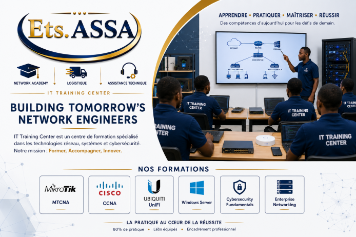

Ets. ASSA · Bukavu, Sud-Kivu, RD Congo
Bâtir les ingénieurs réseau de demain
Formations pratiques en réseaux, cybersécurité, sans-fil, fibre optique et cloud — dans un laboratoire professionnel, avec des formateurs de terrain. 20% théorie, 80% pratique.

Pourquoi choisir IT Training Center ?
Une pédagogie tournée vers la pratique
Notre philosophie : 20% théorie, 80% pratique — pour former des professionnels immédiatement opérationnels.
Laboratoire professionnel
Le Network Innovation & Practice Lab, équipé pour des mises en situation réelles.
Technologies reconnues
MikroTik, Cisco, Ubiquiti, Windows Server, Linux, Cybersécurité — les outils utilisés sur le terrain.
Scénarios réels
Entreprises, ISP, hôpitaux, écoles, ONG — des cas inspirés d'environnements concrets.
Accompagnement personnalisé
Des formateurs expérimentés, des groupes restreints de 4 à 8 participants.
Évaluation par compétences
Labos, études de cas et projet final — une préparation directe aux certifications internationales.
Expertise de terrain
Une communauté d'anciens apprenants, et une expertise issue de nos services professionnels.
Domaines d'expertise